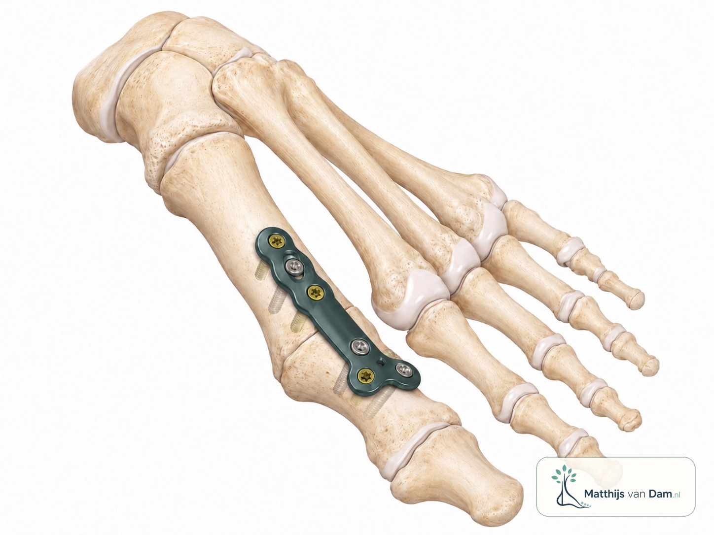

Wat is een MTP-1 artrodese?
MTP-1 is het gewricht aan de basis van de grote teen. Bij artrose kan bewegen in dat gewricht pijnlijk worden. Bij een artrodese zet de chirurg dit gewricht vast, zodat het pijnlijke gewricht niet meer hoeft te bewegen. De botdelen moeten daarna aan elkaar vastgroeien.
De operatie wordt vooral besproken bij hallux rigidus met duidelijke artrose en beperkingen. Het is dus een behandeling voor een specifiek probleem: pijn en stijfheid vanuit het grote-teengewricht.

Wanneer wordt deze operatie besproken?
Een MTP-1 artrodese komt meestal pas in beeld als niet-operatieve maatregelen onvoldoende helpen. Denk aan ruimere schoenen, een stijvere zool, zoolaanpassing, aangepaste belasting of soms een injectie via de eigen behandelaar.
Ook wordt gekeken of een gewrichtssparende behandeling nog passend is. Bij meer uitgesproken artrose, pijn in het gewricht zelf en weinig bruikbare beweging kan een artrodese soms passender zijn dan een operatie die het gewricht probeert te behouden.
De grote teen wordt in een stand vastgezet die lopen en schoenen dragen zo goed mogelijk moet ondersteunen. De beweging in het MTP-1-gewricht komt na deze operatie niet terug.
Kun je daarna normaal lopen of hardlopen?
Dit is een veelgestelde vraag. Na herstel kunnen mensen soms beter lopen dan voor de operatie, vooral als de pijn vanuit het grote-teengewricht afneemt. Hoe dat uitpakt, verschilt per persoon. De voet wikkelt af via de stand van de teen, de schoen en de beweging in andere gewrichten van voet en enkel.
Hardlopen, wandelen op tempo, heuvels, sport en werkschoenen vragen een eerlijk gesprek over verwachtingen. Sommige mensen kunnen sportief actief blijven, maar dat hangt af van herstel, schoenkeuze, ondergrond, belasting, andere voetproblemen en persoonlijke doelen.
Vaak weer beter mogelijk na herstel, maar het looppatroon kan anders voelen.
Ruimte bij de voorvoet en een passende afwikkeling blijven belangrijk.
Sporthervatting is persoonlijk en vraagt afstemming op belasting en doelen.
Herstel in hoofdlijnen
Na de operatie heeft het bot tijd nodig om vast te groeien. In de eerste periode is bescherming van de voet belangrijk. Daarom wordt de belasting stap voor stap opgebouwd. De precieze instructies verschillen per patiënt en horen bij het behandelplan.
Zwelling van de voorvoet kan langer aanwezig blijven dan mensen vooraf verwachten. Ook het vinden van passende schoenen en het opbouwen van lopen, werk en sport kost tijd. De exacte instructies horen bij het persoonlijke behandelplan.
Risico's en aandachtspunten
Zoals bij elke operatie zijn er risico's, zoals wondproblemen, infectie, trombose of zenuwirritatie. Specifiek bij een artrodese kan het bot soms niet goed vastgroeien, kan materiaal irriteren of kan de stand anders voelen dan verwacht.
Daarom is de keuze voor een MTP-1 artrodese altijd een afweging tussen klachten, alternatieven, verwachtingen, gezondheid en herstelbelasting.
Wat bespreek je bij een beoordeling?
Tijdens een beoordeling gaat het niet alleen om de röntgenfoto. Ook pijn, schoenen, werk, sport, eerdere behandelingen, gezondheid en verwachtingen tellen mee. Neem zo mogelijk gebruikte schoenen, steunzolen en informatie over eerdere behandelingen mee.
Waar kan je terecht?
Deze pagina is algemene uitleg op matthijsvandam.nl en geen officiële ETZ-patiëntinformatie. De meeste voetklachten beginnen niet bij een orthopedisch chirurg. Bij nieuwe of niet-acute klachten is de huisarts vaak het eerste aanspreekpunt; afhankelijk van de situatie kunnen ook fysiotherapie, podotherapie of schoentechnische zorg een rol spelen.
Als specialistische beoordeling nodig is, loopt verwijzing via de gebruikelijke zorgkanalen. Voor afspraken, planning, uitslagen en praktische ziekenhuisinformatie zijn de officiële ETZ-kanalen leidend.
Deel via deze website geen medische gegevens, foto's, verwijsbrieven of vragen over lopende zorg. Gebruik deze website niet bij spoed of acute klachten. Neem dan contact op met de huisarts, huisartsenpost, de geldende spoedlijn of bel 112 wanneer dat nodig is.
Veelgestelde vragen
Kun je na een MTP-1 artrodese normaal lopen?
Na herstel kunnen mensen soms beter lopen dan voor de operatie, vooral als de pijn vanuit het grote-teengewricht afneemt. Hoe dat uitpakt, verschilt per persoon en hangt af van herstel, schoenen, stand van de teen en eventuele andere voetklachten.
Kun je na een MTP-1 artrodese nog hardlopen?
Hardlopen is na een MTP-1 artrodese niet voor iedereen hetzelfde haalbaar of verstandig. Sommige mensen kunnen sportief actief blijven, maar verwachtingen, ondergrond, schoenen en belasting moeten persoonlijk worden besproken.
Kan de grote teen na een MTP-1 artrodese nog bewegen?
Het MTP-1-gewricht zelf beweegt na een artrodese niet meer. Andere gewrichten in de voet en teen kunnen nog wel meebewegen, waardoor de voet vaak kan blijven afwikkelen.
Kun je gewone schoenen dragen na een MTP-1 artrodese?
Veel mensen kunnen na herstel gewone schoenen dragen, maar hoge hakken of schoenen met weinig ruimte bij de voorvoet zijn vaak minder geschikt. De praktische mogelijkheden hangen af van de stand, zwelling, schoenvorm en persoonlijke situatie.
Wanneer wordt een MTP-1 artrodese besproken?
Een MTP-1 artrodese kan worden besproken bij duidelijke artrose van het grote-teengewricht met pijn en beperkingen, vooral als niet-operatieve maatregelen onvoldoende helpen en een gewrichtssparende operatie niet passend is.